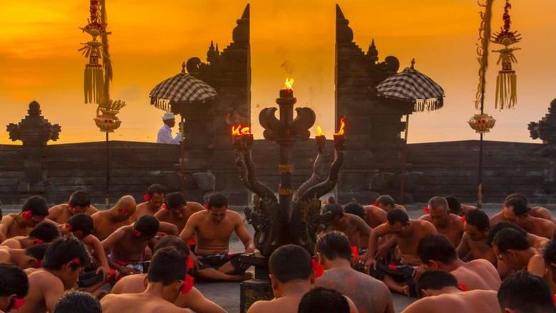
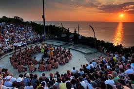
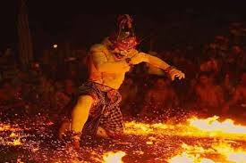

1 / 3

Caption Text
2 / 3

Caption Two
3 / 3

Caption Three
In the 1930s, Balinese artist Wayan Limbak and German painter Walter Spies created the Kecak dance. This dance is inspired by the traditional rituals performed by the Balinese people which were later adapted in the Ramayana story in Hindu belief to be displayed as an art show when tourists come to Bali. The Kecak dance is usually performed by tens of shirtless men wearing plaid cloth from the waist to above the knees. The Kecak dance was first performed in several villages, one of which was Bona Village, Gianyar. However, it has grown to all regions in Bali and is always presented during activities such as festivals held by the government and the private sector. Read the detikTravel article, "Kecak Dance: History,... Meaning and Place of Performance"In the 1930s, Balinese artist Wayan Limbak and German painter Walter Spies created the Kecak dance. This dance is inspired by the traditional rituals performed by the Balinese people which were later adapted in the Ramayana story in Hindu belief to be displayed as an art show when tourists come to Bali. The Kecak dance is usually performed by tens of shirtless men wearing plaid cloth from the waist to above the knees. The Kecak dance was first performed in several villages, one of which was Bona Village, Gianyar. However, it has grown to all regions in Bali and is always presented during activities such as festivals held by the government and the private sector. Read the detikTravel article, "Kecak Dance: History, Meaning and Place of Performance"
There are Images of Tari kecak
